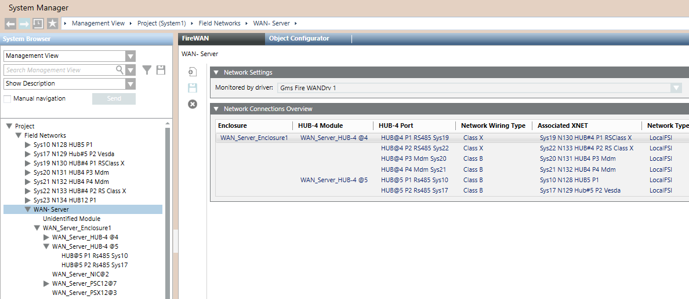

Fire WAN Network Reference
This section provides some reference information about the Fire WAN network configuration parameters.
For a step-by-step guide to the Fire WAN network configuration, see the workflow in Configuring a Fire WAN.
For instructions about the hardware installation, see Installing Fire WAN Enclosure.
Fire WAN Configuration Parameters
In Engineering mode, the FireWAN tab of the WAN network node provides the Network Settings expander, to associate the Fire WAN driver, and the Network Connections Overview, to display the enclosures and HUB-4 configuration in a compact view.
